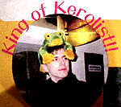
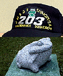
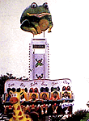
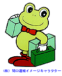

|
謎のスケート大会ケロリスト集団、かえる展を訪問！ 【福岡かえる展２会場発小浜かえり同志記者】平成12年1月23日号や平成12年1月10日号や平成12年1月5日号などで紹介されるように、フィギュアスケートの国際試合で、カエルをリンクに投げ込んだり、試合後のパーティーなどで、選手にカエルを手にした写真などを撮影する一連の謎のカエル集団の存在が、うわさされていたが、そのうちの有力なカエル行動集団『ケロリスト』の関係者が、６月８日、福岡かえる展２の会場を訪れた。試合後のパーティーなどで、選手にカエルとツーショットの写真を撮影して回る、ケロリスト行動を始めたのは、平成１２年２月の欧州選手権から。 関係者によると『とりわけ、リトアニアのアイスダンスの選手、ポビラス・ヴァナガスのは心からかえるを愛し、とにかくかわいがってくれます。私らケロリストにとってはかえるの王国の王様のような存在なものでキングオブケロリストと呼んでいる』そうだ。 活動の拠点は、ＨＰの管理人は東京在住。ケロリスト通信を作っている人は埼玉在住だそうだあ。 なんと公式ページも発見しました。 詳しくは、連日更新している公式ホームページでじかめ写真集６月８日号を読もう！ 【全国かえる奉賛会】昨年から、全国のフィギュアスケートファンとともに、なぞのカエル投げ込み集団の正体を突き止めるために捜索していました。まさか、カエル行動を展開するスケーターファンの集団に別の新たな一派が存在していたなんて！ いったいスケートとカエラーの相関関係はどうなっているんだあああ。それにしても選手諸君は、カエルと快く付き合ってくれてうれしいぞー。
ケロリスト行動を大王も見習って、大相撲の九州場所で、大王は座布団の代わりにカエルを投げ込み、部屋に押し掛けて大関雅山に１メートルのケロタン人形だかせてみようかな。
 海上自衛隊に無事カエル航空団！【千葉発けろ沢けろ枝同志記者】海上自衛隊下総航空基地一般公開日にいきましたら、基地内にカエルを発見しました。「ぶじかえる」石像です。整備した飛行機が無事カエルようにと、敷地内に置かれていました。 ここの基地には、第２０３航空整備隊というのがあるようで、そのキャップにもカエルが付いてたので思わず購入してしまいました。実際に隊員さんもかぶっているようです。
【全国かえる奉賛会】何度出撃しても全機無事にカエル。無敵の航空団であるなー。敵機も丸飲みにしてしまう頼もしい海上自衛隊の戦闘機部隊なのであろう！
 長崎阿蘭陀年海上にビキタン乗り物！【福岡発そえっち様】ながさき阿蘭陀年の会場に１年間限定の遊園地が出来たのですが、その中に、頂上がビキタンになっていて、子どもたちが乗る箱も蛙の顔面になっている、素晴らしい乗り物がありました。 今度のデートでは長崎にでかけて、彼女といっしょにビキタン号に搭乗するつもりです。 ビキタンがいる、わいわい広場は、長崎市常盤町出島埋め立て地内にあります。電話は095-820-1715です。みんなで予約を入れてどんどん行きましょう。
千葉にも同型カエル遊具【千葉発えへへ同志記者】粗エッチ様が報告している「ながさき阿蘭陀年会場のビキタン」ですが、千葉県のマザー牧場内「わくわくランド」にある「フロッグ ホッパー」と同一のモノらしいので、ご報告します。1998年の09月に行った折に撮影したものですので、現在も有るかは未確認なのですが、このページの情報によると、まだあるようです。
その時は乗らずに帰ってきてしまいましたが、その後しばらく「やはり乗ればよかった」と後悔しておりました。
 間口運輸のカエル印キャラを発見！【大阪発カエルライダー同志記者】間口運輸のトラックが話題になっていますが、カエルくんは運転席の後ろ、荷室左側の後方、後部ゲート右上に描かれています。ｍａｇｕｃｈｉ運輸の社名デザインもシャレたものでトラックの中でもかなりイメージの良いものです。 カエルさんは社長のイメージだそうです（いよ！カエル社長） 大王、カエルファンの皆様 またまた行ってきましたカエルトラックの写真集作りました。大阪でもカエル展！【大阪発=田中同志記者】おおさか藤井寺市の“ゆめいろミュージアム”（ギャラリー）です。６月いっぱいゆめいろミュージアムでカエル展を開催中です。【福岡かえる展２事務局】福岡かえる展２公式ホームページを公開中です。 投稿採用者に武功カエル徽章を授与！ |
かえる古新聞過去に取り上げた記事を見出し付きで一覧したい人は、ここをクリック◆創刊号を見る◆先週号を見る◆話題の号を見る◆かえる新聞の昔を読む
|
私も入っています。。全国かえる奉賛会
大王様に会うには、このバナーをクリック。ずっと奥に写真館があるぞ。全国かえる奉賛会に入会するには、自分のホームページのどこかに、下の部分を追加するとバナーがリンク付きで表示されるぞ。どんどん入会しましょー |


|